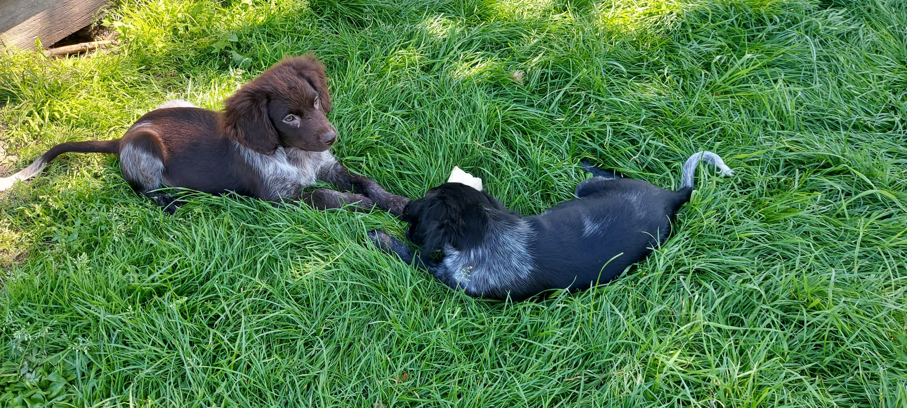
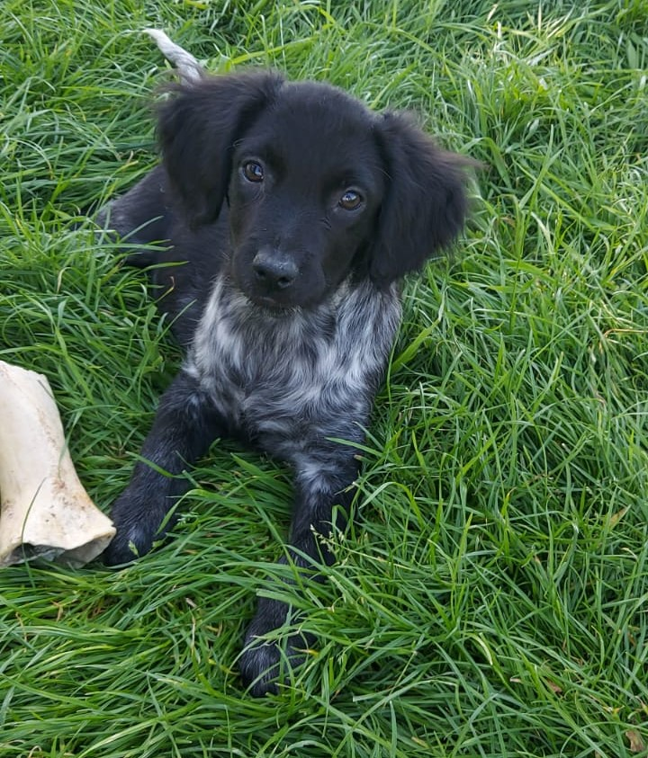

Over de Friese Stabij
De Friese Stabij, ook bekend als de Stabyhoun, is een Nederlands hondenras dat afkomstig is uit Friesland. Het ras staat bekend om zijn vriendelijke aard, intelligentie en veelzijdigheid.
De Friese Stabij is middelgroot, heeft een elegante verschijning en een opvallende vacht. Ze zijn zeer geschikt als gezinshond en hebben een sterk jachtinstinct, wat hen geschikt maakt voor verschillende activiteiten.
Goede eigenschappen van de Friese Stabij
Het Friese Stabij-hondenras staat bekend om verschillende goede eigenschappen die het geliefd maken bij hondenliefhebbers. Enkele opvallende eigenschappen zijn:
- Vriendelijkheid: Friese Stabijs zijn over het algemeen vriendelijk en sociaal. Ze vormen vaak sterke banden met hun gezin.
- Intelligentie: Deze honden zijn intelligent en leren snel. Dit maakt ze geschikt voor verschillende vormen van training.
- Veelzijdigheid: Friese Stabijs zijn veelzijdig en gedijen goed in verschillende omgevingen, of het nu in een stedelijke omgeving of op het platteland is.
- Jachtinstinct: Ze hebben een sterk jachtinstinct, wat hen geschikt maakt voor activiteiten zoals speuren en apporteren.
Uiterlijk van de Friese Stabij
 Het uiterlijk van de Friese Stabij kenmerkt zich door zijn elegante bouw en opvallende vacht. Enkele kenmerken zijn:
- Grootte: Middelgroot met een evenwichtige en harmonieuze bouw.
- Vacht: Langharig met een dichte ondervacht. De vacht kan verschillende kleuren hebben, waaronder zwart, bruin, en oranje met witte aftekeningen.
- Hoofd: Markant hoofd met een rechte neus en alerte ogen.
- Oren: Vlaggendragende oren die naar voren hangen.
- Staart: Hoog aangezette staart die recht omhoog wordt gedragen.
Verzorging van de Friese Stabij
De verzorging van een Friese Stabij vereist regelmatig borstelen van de vacht, dagelijkse lichaamsbeweging en een uitgebalanceerd dieet. Zorg ervoor dat je ook regelmatig de oren en tanden controleert.
Geschiedenis van de Friese Stabij
De Friese Stabij heeft een rijke geschiedenis die teruggaat tot enkele eeuwen geleden. Ontdek meer over de oorsprong en evolutie van dit unieke hondenras.